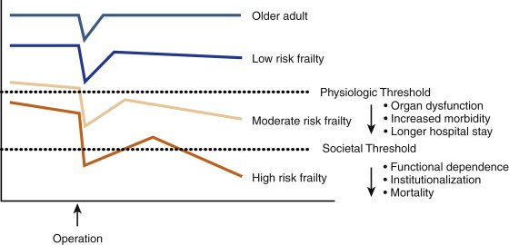

Pre-Op
Assessment of the Elderly and Frail
Introduction
Frailty is not addressed adequately in traditional models of pre-op
assessment
- these assume that chronological age is less important than
comorbidities accumulated
- but chronological age is
an independent risk factor for major surgery
Geriatric patients develop
'frailty'
- a physiological vulnerability not adequately captured by
individual end-organ assessments
- a lack of physical reserve across multiple organ systems
Assessment of elderly and frailty should supplement and not replace
traditional pre-op assessment
Frailty
A multisystem reduced physiologic reserve associated with increased
disability and culminating in an increased susceptibility to stress.
Consider all organ systems and functions in the elderly
- cognitive, mobility, ADLs, continence, skin and pressure areas,
delirium, nutrition, falls, depression, etc
- independent risk factors within frailty include cognitive
dysfunction, recent wgt loss, low albumin, functional dependence and
depression.
Associated with polypharmacy and psychosocial isolation
Can be quantitatively measured by sum of frailty traits
- three or more = frailty
- less but still some = pre-frailty, also associated with poorer
surgical outcomes in major procedures.
--> E.g. indicators include Charlson index, MMSE, Katz ADL score
Disability is difficulty or dependence on ADLs
- another risk factor for mortality after surgery
- bathing is the first ADL that usually requires assistance so is a
good screening guide to disability
Comorbidity
- Charlson Index has proven utility
- by comparison ASA has not adequately reflected poor outcomes
Malnutrition
- occurs in old frail pts; physiological anorexia of ageing
Consider social vulnerability as a marker of frailty
Frailty and Surgery
Strong correlation between degree of frailty and poor outcomes from
surgery
- ie morbidity, organ dysfunction, mortality, stay,
institutionalization after surgery
- associated with delerium, which itself is associated with markedly
worse surgical outcomes
Can be applied within the global risk assessment of elderly surgical
patients
- preop nurse can be used to quantify frailty according to
established quantifying tools
--> can usefully inform in patient / family consultation, risk
assessment and decision to operate or not.
